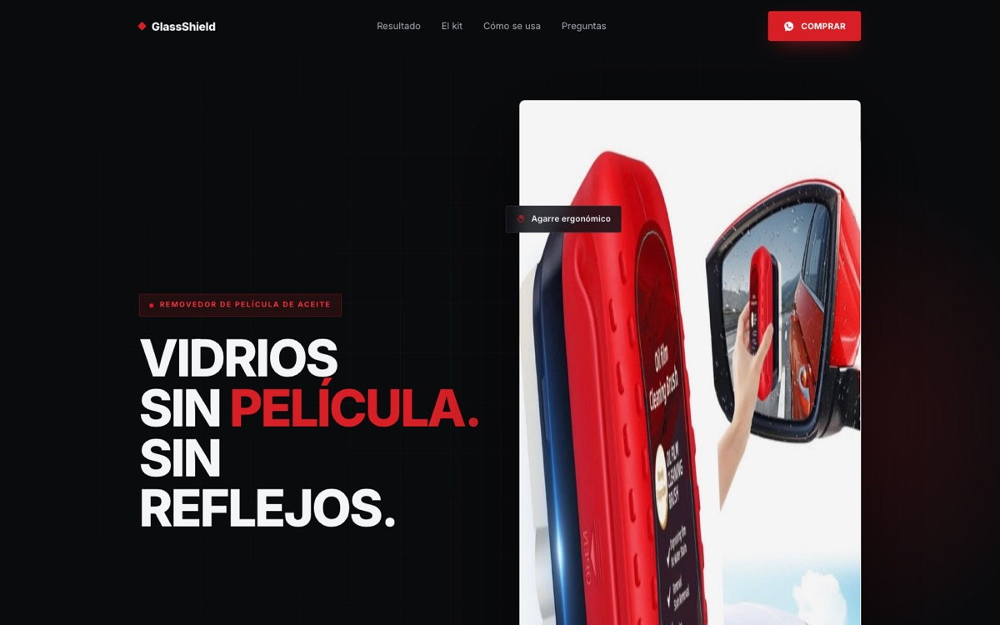
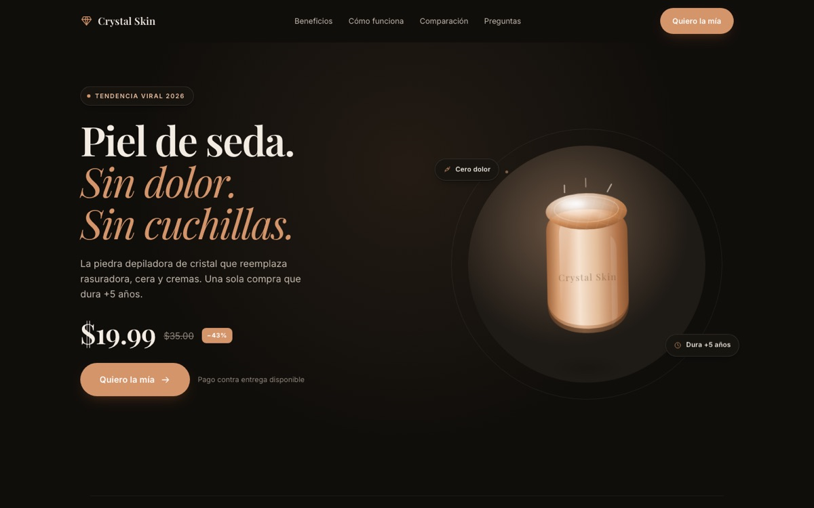
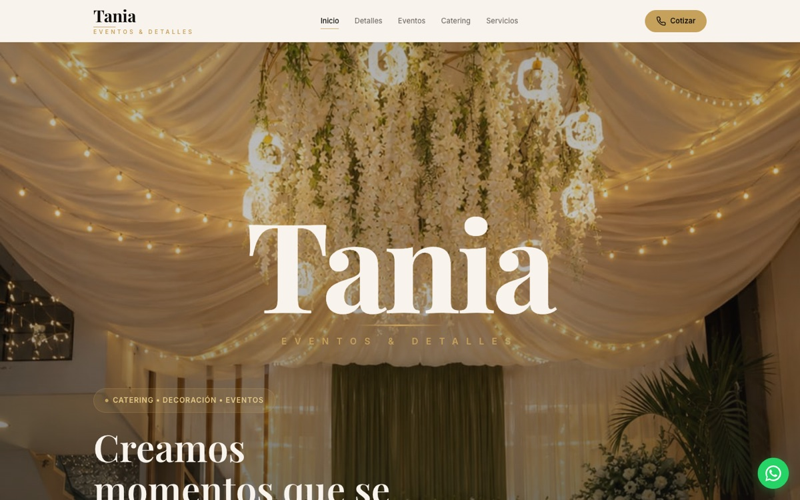
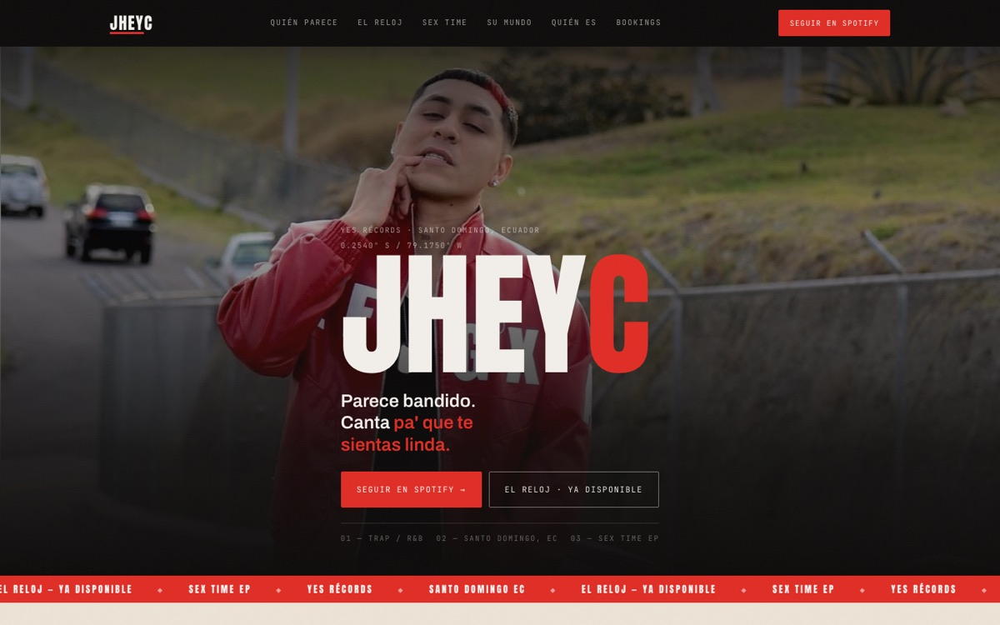

Experimentos
Landings de producto
Páginas de producto con prueba visual, uso paso a paso y compra directa, como GlassShield y Crystal Skin.
DANI BOSS
Estrategia. Inteligencia. Sistemas.
Estrategia · IA · E-commerce · Web
Sócrates pregunta. Dani Boss construye.
Conecto inteligencia artificial, e-commerce y experiencias web para ayudar a las marcas a captar clientes, optimizar sus procesos y vender mejor.
Dani Boss · Fundador de MAGNA 8
Ecuador → Latinoamérica
00 — El sistema
Antes de construir, hago la pregunta correcta: ¿dónde se pierde tu cliente? Después conecto cada pieza para que nadie se quede sin respuesta. Toca cada nodo.
Atrae a las personas correctas: anuncios, contenido y perfiles que llevan tráfico al sistema.
01 — El problema
Muchas marcas pierden oportunidades porque trabajan con herramientas desconectadas: un chat por aquí, una web por allá, el seguimiento en la memoria. Desliza para ver la diferencia.
Un sistema no garantiza ventas: ordena y optimiza el proceso comercial para que cada oportunidad tenga más probabilidad de cerrarse.
02 — Disciplinas
Automatizo la parte repetitiva del proceso comercial para que tú te enfoques en cerrar y entregar.
Instagram · 22:41
Hola, ¿cuánto cuesta una página web para mi negocio?
Llega una consulta fuera de horario. Nadie está conectado.
Análisis
El sistema identifica qué necesita y qué preguntar.
Respuesta · en segundos
¡Hola! Claro. ¿Qué vendes y qué te gustaría que la gente haga al entrar a tu web?
Respuesta inmediata con el tono de tu marca.
Calificación
Prioriza a quien está listo para avanzar.
Siguiente acción
Te comparto un horario para una llamada de 15 minutos 📅
Agenda o deriva a una persona. Si no responde, entra al seguimiento.
Demostración ilustrativa
Construyo la ruta completa de venta online, pensada para comprar desde el celular.
Tu producto
Foto, beneficio principal y precio claro.
Landing de producto
Prueba visual, uso, preguntas y un solo botón.
Comprar ahoraPedido
NombreCiudadDirecciónConfirmar pedido¡Hola! Recibimos tu pedido. ¿Confirmas la dirección de entrega?
Sí, confirmado ✅
Seguimiento
● Pedido confirmado
● En camino
○ Entregado
Mensajes en cada etapa para reducir rechazos.
Demostración ilustrativa · no representa ventas reales
Dirección de arte, desarrollo y estrategia en una sola pieza. Rápidas, premium y conectadas a WhatsApp.
Tu marca,
en su mejor versión.
Una página que guía a tu cliente hasta escribirte.
Escribir por WhatsApp03 — Laboratorio
Uso mis propios proyectos como laboratorio para probar estrategias de marketing, comercio digital e inteligencia artificial antes de llevarlas a una marca.
Experimentos
Páginas de producto con prueba visual, uso paso a paso y compra directa, como GlassShield y Crystal Skin.
Sistemas
Mi propio dashboard de finanzas y vida diaria. Lo uso todos los días para decidir con datos.
Implementaciones
Dos guías gratuitas que entrego por Instagram y WhatsApp: 5 sistemas y 5 proyectos con Claude.
Aprendizajes
Enseño en Instagram los sistemas que uso. Lo que la audiencia pregunta define el próximo experimento.
Filosofía
Cinco principios que guían cada sistema que construyo. Pasa el cursor o toca cada panel.
04 — Proyectos
Capturas reales de páginas que diseñé y desarrollé. Toca "Ver proyecto" para abrir la vista ampliada en escritorio y móvil.

01 · E-commerce · Producto

02 · E-commerce · Producto

03 · Negocio local · Servicios

04 · Marca personal · Artista
05 — Resultados
Caso 01 · Salud
Caso 02 · Marca de tatuajes
06 — Proceso
Analizo el negocio, la oferta, los procesos comerciales y las oportunidades de mejora.
Defino qué componentes deben construirse y cómo se conectan entre sí.
Diseño y desarrollo las páginas, herramientas, automatizaciones o experiencias necesarias.
Reviso el funcionamiento y, cuando hay datos suficientes, identifico qué mejorar.
07 — Servicios
Tres formas de trabajar juntos. Si no sabes cuál es la tuya, empieza por el diagnóstico.
01
Desde$150pago único
Pedir diagnóstico02 · Recomendado
Desde$1,500al mes
Construir mi sistema03
Desde$8,000por proyecto
Hablar de crecimiento08 — Preguntas
No. Yo construyo y conecto todo. Recibes el sistema funcionando y te enseño a usarlo.
Trabajo con marcas de Ecuador y Latinoamérica. Todo se maneja online, por WhatsApp y videollamada.
Depende del sistema. Una landing o un asistente básico puede estar en días; un sistema completo, en pocas semanas. En el diagnóstico te doy fechas concretas.
Sí. Empiezas por la pieza que más necesitas y conectamos el resto después.
Porque cada sistema se construye a medida. Prefiero pocos clientes bien atendidos que muchos con un servicio genérico.
09 — Hablemos
Cuéntame qué estás construyendo y encontraremos la forma de convertirlo en una experiencia digital más inteligente, eficiente y preparada para crecer.
+593 959 639 787